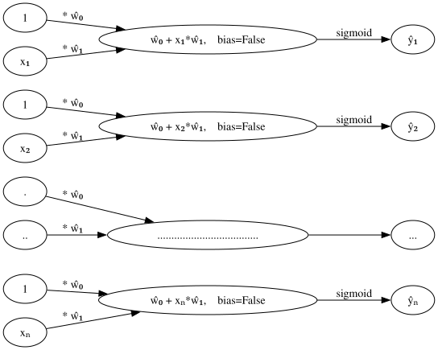
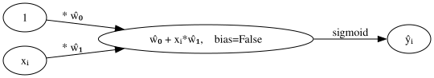
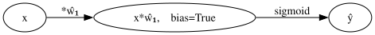
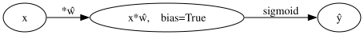
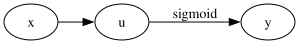
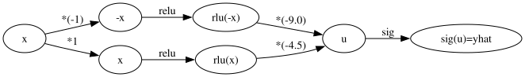
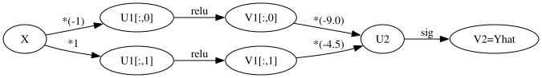
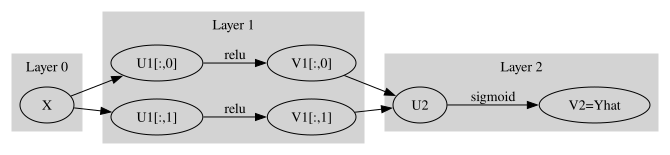
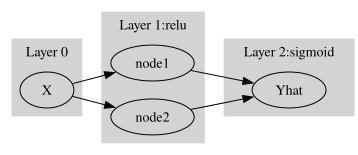
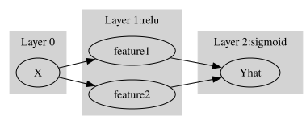

# {{<video https://youtu.be/playlist?list=PLQqh36zP38-xB7p8AzMKUrEfxL0Vte-pY&si=BwVUNxT8IIPrjIcA>}}07wk: 신경망의 표현, 시벤코 정리

1. 강의영상
2. Imports
import torch
import torchvision
import matplotlib.pyplot as plt
import pandas as pdplt.rcParams['figure.figsize'] = (4.5,3.0)3. 신경망의 표현
신경망의 표현: \({\bf X} \to \hat{\bf Y}\) 로 가는 과정을 그림으로 표현
A. 로지스틱
\[\underset{(n,1)}{\bf X} \overset{l_1}{\to} \underset{(n,1)}{\bf U^{(1)}} \overset{sig}{\to} \underset{(n,1)}{\bf V^{(1)}} =\underset{(n,1)}{\hat{\bf Y}}\]
- 모든 observation과 가중치를 명시한 버전
(표현1)

- 단점: 똑같은 그림의 반복이 너무 많음
- observation 반복을 생략한 버전들
(표현2) 모든 \(i\)에 대하여 아래의 그림을 반복한다고 하면 (표현1)과 같다.

(표현3) 그런데 (표현2)에서 아래와 같이 \(x_i\), \(y_i\) 대신에 간단히 \(x\), \(y\)로 쓰는 경우도 많음
- 1을 생략한 버전들
(표현4) bais=False 대신에 bias=True를 주면 1을 생략할 수 있음

(표현4의 수정) \(\hat{w}_1\)대신에 \(\hat{w}\)를 쓰는 것이 더 자연스러움

(표현5) 선형변환의 결과는 아래와 같이 \(u\)로 표현하기도 한다.

다이어그램은 그리는 사람의 취향에 따라 그리는 방법이 조금씩 다릅니다. 즉 교재마다 달라요.
B. 스펙의역설
\[\underset{(n,1)}{\bf X} \overset{l_1}{\to} \underset{(n,2)}{\bf U^{(1)}} \overset{relu}{\to} \underset{(n,2)}{\bf V^{(1)}} \overset{l_2}{\to} \underset{(n,1)}{\bf U^{(2)}} \overset{sig}{\to} \underset{(n,1)}{\bf V^{(2)}} =\underset{(n,1)}{\hat{\bf Y}}\]
참고: 코드로 표현
torch.nn.Sequential(
torch.nn.Linear(in_features=1,out_features=2),
torch.nn.ReLU(),
torch.nn.Linear(in_features=2,out_features=1),
torch.nn.Sigmoid()
)- 이해를 위해서 예젠에 다루었던 아래의 상황을 고려하자.

(강의노트의 표현)

(좀 더 일반화된 표현) 상황을 일반화하면 아래와 같다.

* Layer의 개념: \({\bf X}\)에서 \(\hat{\boldsymbol y}\)로 가는 과정은 “선형변환+비선형변환”이 반복되는 구조이다. “선형변환+비선형변환”을 하나의 세트로 보면 아래와 같이 표현할 수 있다.
- \(\underset{(n,1)}{\bf X} \overset{l_1}{\to} \left( \underset{(n,2)}{\bf U^{(1)}} \overset{relu}{\to} \underset{(n,2)}{\bf V^{(1)}} \right) \overset{l_2}{\to} \left(\underset{(n,1)}{\bf U^{(2)}} \overset{sig}{\to} \underset{(n,1)}{\bf V^{(2)}}\right), \quad \underset{(n,1)}{\bf V^{(2)}}=\underset{(n,1)}{net({\bf X})}=\underset{(n,1)}{\hat{\bf Y}}\)
이것을 다이어그램으로 표현한다면 아래와 같다.
(선형+비선형을 하나의 Layer로 묶은 표현)

- node의 개념: \(u\to v\)로 가는 쌍을 간단히 노드라는 개념을 이용하여 나타낼 수 있음.
(노드의 개념이 포함된 그림)

여기에서 node의 숫자 = feature의 숫자와 같이 이해할 수 있다. 즉 아래와 같이 이해할 수 있다.
(“number of nodes = number of features”로 이해한 그림)

다이어그램의 표현방식은 교재마다 달라서 모든 예시를 달달 외울 필요는 없습니다. 다만 임의의 다이어그램을 보고 대응하는 네트워크를 pytorch로 구현하는 능력은 매우 중요합니다.
C. 레이어를 세는방법
- Layer를 세는 방법
- 제 방식: 학습가능한 파라메터가 몇층으로 있는지… <– 이것만 기억하세여
- 일부 교재 설명: 입력층은 계산하지 않음, activation layer는 계산하지 않음. <– 무시하세요.. 이러면 헷갈립니다..
- Hidden Layer의 수를 세는 방법
- 제 방식:
Hidden Layer의 수 = Layer의 수 -1<– 이걸 기억하세여..
- 일부 교재 설명:
Layer의 수 = Hidden Layer의 수 + 출력층의 수<– 기억하지 마세여
- 몇가지 예시들
# 예시1 -- 2층 (히든레이어는 1층)
torch.nn.Sequential(
torch.nn.Linear(??,??), ## <-- 학습해야할 가중치가 있는 층
torch.nn.ReLU(),
torch.nn.Linear(??,??), ## <-- 학습해야할 가중치가 있는 층
)## 예시2 -- 2층 (히든레이어는 1층)
torch.nn.Sequential(
torch.nn.Linear(??,??), ## <-- 학습해야할 가중치가 있는 층
torch.nn.ReLU(),
torch.nn.Linear(??,??), ## <-- 학습해야할 가중치가 있는 층
torch.nn.Sigmoid(),
)## 예시3 -- 1층 (히든레이어는 없음!!)
torch.nn.Sequential(
torch.nn.Linear(??,??), ## <-- 학습해야할 가중치가 있는 층
) ## 예시4 -- 1층 (히든레이어는 없음!!)
torch.nn.Sequential(
torch.nn.Linear(??,??), ## <-- 학습해야할 가중치가 있는 층
torch.nn.Sigmoid()
) ## 예시5 -- 3층 (히든레이어는 2층)
torch.nn.Sequential(
torch.nn.Linear(??,??), ## <-- 학습해야할 가중치가 있는 층
torch.nn.Sigmoid()
torch.nn.Linear(??,??), ## <-- 학습해야할 가중치가 있는 층
torch.nn.Sigmoid()
torch.nn.Linear(??,??), ## <-- 학습해야할 가중치가 있는 층
) ## 예시6 -- 3층 (히든레이어는 2층)
torch.nn.Sequential(
torch.nn.Linear(??,??), ## <-- 학습해야할 가중치가 있는 층
torch.nn.ReLU()
torch.nn.Dropout(??)
torch.nn.Linear(??,??), ## <-- 학습해야할 가중치가 있는 층
torch.nn.ReLU()
torch.nn.Dropout(??)
torch.nn.Linear(??,??), ## <-- 학습해야할 가중치가 있는 층
torch.nn.Sigmoid()
) - 참고1: 문헌에 따라서 레이어를 세는 개념이 제가 설명한 방식과 다른경우가 있습니다. 제가 설명한 방식보다 1씩 더해서 셉니다. 즉 아래의 경우 레이어를 3개로 카운트합니다.
## 예시1 -- 문헌에 따라 3층으로 세는 경우가 있음 (히든레이어는 1층)
torch.nn.Sequential(
torch.nn.Linear(??,??), ## <-- 학습해야할 가중치가 있는 층
torch.nn.ReLU(),
torch.nn.Linear(??,??), ## <-- 학습해야할 가중치가 있는 층
torch.nn.Sigmoid()
)예를 들어 여기에서는 위의 경우 레이어는 3개라고 설명하고 있습니다. 이러한 카운팅은 “무시”하세요. 제가 설명한 방식이 맞아요. 이 링크 잘못(?) 나와있는 이유는 아래와 같습니다.
- 진짜 예전에 MLP를 소개할 초창기에서는 위의 경우 Layer를 3개로 셌음. (Rosenblatt et al. 1962)
- 그런데 시간이 지나면서 어느순간 그렇게 안세기 시작함..
Rosenblatt, Frank et al. 1962. Principles of Neurodynamics: Perceptrons and the Theory of Brain Mechanisms. Vol. 55. Spartan books Washington, DC.
참고로 히든레이어의 수는 예전방식이나 지금방식이나 동일하게 카운트하므로 히든레이어만 세면 혼돈이 없습니다.
- 참고2: 사실 학습가능한 Layer만 층으로 세는 방식이 젤 좋다고 생각하는데요, 이것도 예외가 있습니다. 이 강의에서 다루지 않을것같지만 BN계층이라는게 있는데요, 이건 학습가능한 파라메터가 있지만 layer로 취급하지 않습니다.
AI의 답변: 일반적으로 딥러닝에서 신경망의 깊이나 전체 층(Layer) 수를 셀 때 BN 층은 독립적인 하나의 층으로 카운트하지 않는 경우가 대부분입니다. 그 이유는 다음과 같습니다.
- 하나의 ’세트(Block)’로 취급: 실무나 논문에서는 보통 [Conv(또는 Linear) \(\rightarrow\) BN \(\rightarrow\) Activation] 이 세 가지 연산을 하나로 묶어서 단일한 층이나 블록으로 간주합니다. BN은 새로운 특징을 추출한다기보다, 앞선 가중치 연산의 결과를 학습하기 좋게 다듬어주는 ’보조적인 정규화 단계’로 인식하기 때문입니다.
- 주요 가중치(Weight) 연산 기준: ResNet-50이나 VGG-16 등 유명한 모델의 이름에 붙은 숫자(층 수)를 셀 때는, 공간적/의미적 특징을 변환하는 핵심 연산 층(Convolutional Layer, Fully Connected Layer 등)만을 기준으로 셉니다.
요약하자면: “학습 가능한 파라미터가 있는 층을 센다”는 기준은 기본 신경망 구조를 이해하기 위한 가장 핵심적인 원칙이 맞습니다. 다만, BN처럼 모델을 돕기 위해 추가된 특수 목적의 층들은 파라미터가 있더라도 “주요 연산 층에 딸린 부속 층”으로 취급되어 전체 층 수(Depth)를 말할 때는 생략하는 것이 업계의 암묵적인 관례입니다.